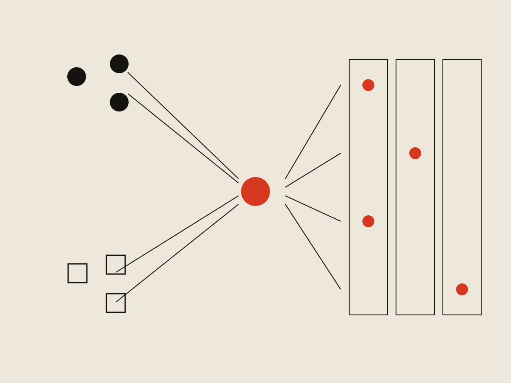
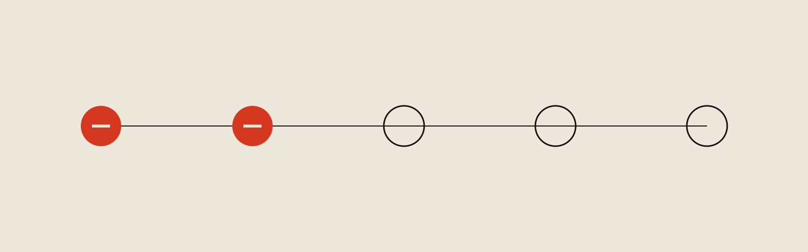
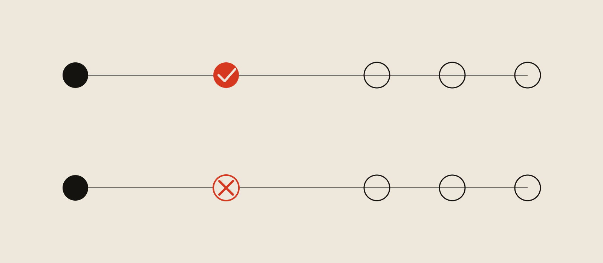

Frontline Recruiting & Hiring
Interview Scheduling
Rebuilding an interview scheduler two calls into user testing.

Context
Recruiting & Hiring is Frontline's applicant tracking system, and it was being rebuilt from the ground up. In the new version, each job posting gets a hiring funnel made of configurable stages, and one of those stage types is Interview. It existed as a label and nothing more — districts could move an applicant into it, then had to leave the product entirely to do anything about it: phone calls, email, a calendar tool, a room booking system, depending on the district.
That mattered commercially. Roughly half the customers still on the legacy product used its interview management consistently, and a rebuild that couldn't do interviews gave them a reason not to move. This was a migration blocker before it was a usability problem.
Why we started with scheduling
The work started with generative research across districts, questions I wrote with the PM, calls she ran while I sat in and followed up as things came up. Districts didn't agree on what hurt most — one named room availability, another background check turnaround, another inconsistency between hiring managers. But scheduling kept coming back, and it sat upstream of most of the others. The typical version: a coordinator works out who should interview, chases their availability by phone or email, then contacts applicants once there's a window. If the two don't line up, or an interviewer drops, the whole sequence restarts, room included.
Compiling interview notes came up too, and it would have been easy to read that as a feature request. But districts keep notes for legal reasons and almost never reopen them — they ask the interviewer directly and trust the answer. Panels take notes round-robin by hand, and several districts said a laptop open during the interview puts a wall between the panel and the candidate. Digitizing that would have saved filing cabinet space and solved nothing else, so I left it out of scope and spent the room on scheduling instead.
A prototype built to be argued with
I looked at how scheduling works in Calendly, Outlook, and a few applicant tracking systems to understand what conventions people would carry in, then built a clickable prototype in Lovable — intentionally rough, closer to a wireframe than a finished interface, since its job was to give district administrators something concrete to react to. Building it in an AI tool meant I could rebuild it between sessions instead of between rounds, which turned out to matter.

Two calls in, the model was wrong
The first version had the coordinator select interviewers and applicants on the same screen, poll everyone at once, and schedule wherever availability overlapped. Reasonable model. No district in the round works that way.
Two things came back immediately. Interviews are conducted by a panel, and getting a panel into one room is the hard part — districts book a single block and run every candidate through it back to back. One administrator described a four-hour block with the next candidate reading the questions in the last fifteen minutes of the interview before theirs; there's no version of the world where she gets her directors into a room three separate times in one week. And polling interviewers and applicants at the same time produces exactly the outcome districts are trying to avoid: interviews scattered across days instead of gathered into a block. Interviewer availability has to be locked before applicants are ever asked.
The sharpest correction: in several districts nobody polls the panel at all. The person setting up the interview outranks the people in it, sets the time, and tells them to be there. A flow that required a poll would be dead weight for a meaningful share of the customer base. I rebuilt the prototype between sessions and tested the new version on the remaining three districts.
Locking interviewer availability first
The new structure separated the steps: select interviewers, set the interview window and either poll them or skip the poll if you already know their availability, select applicants, configure the interview details, configure confirmation emails, then review and send. Applicants receive a link and book their own slot; once they do, the system sends confirmations with a calendar file attached, and the coordinator's job ends at "send."
The skip option came directly from the third finding — it's the clearest case in this project of testing changing the product instead of polishing it, since nothing in the original concept had a path for a coordinator who already knows when the interviews are happening.

The problem the rebuild created
Splitting the steps introduced an ambiguity I hadn't anticipated. Users now saw two calendars in one flow — one for polling interviewer availability, one showing the slots offered to applicants — and several read the first as scheduling the actual interviews. One participant hit the applicant slots and said the header needed rewriting because what she thought she'd done and what she'd actually done were two different things. Another pair worked out mid-session that the times they'd set as poll options had become the times offered to candidates, and said they wouldn't have caught it without seeing the later screen.
The fix was two-part: I replaced the tab structure with a stepper, so the sequence reads as a process with a position in it, and I made the poll step impossible to pass through passively. The coordinator either sends a poll or explicitly marks that no poll is needed. Skipping had been the quiet default; making it a stated choice is what separated the two calendars in people's heads.

What I cut
Room booking. A genuine pain point in discovery, but we had no source of truth for what rooms exist at a given site, and building one would have meant districts maintaining a room database inside our product. What shipped uses what the platform already knows: one location field pulls site suggestions from the same directory the staff list comes from, the other is plain text for the room.
Calendar integration. The obvious request, held for the first version even setting feasibility aside. Districts can't guarantee calendar access across their own staff, and one customer's district privatizes interview invites so other staff can't see candidate names — with outside panelists she can't verify who has visibility into a calendar. Integration would have pushed candidate information somewhere she deliberately keeps it out of.
Essential vs. optional interviewers. Real, and tempting to model, but the coordinator already knows the superintendent has to be there. Encoding it would have added configuration to every setup to serve a judgment users make instantly and for free.
What I pushed for
Every district in the round had interviewers outside the system: a co-op employee with a district email who isn't in the staff directory, a partner district's administrator, a specialist brought in for one panel. Engineering's initial position was reasonable — build for interviewers we can look up, handle the rest later. That would have left the coordinator doing the same manual email chase for external panelists that the feature exists to eliminate.
Three cases existed: interviewers with product access, interviewers in the directory without it, and people outside the organization entirely. Two of the three couldn't authenticate. I argued the complexity belonged on our side, since building one path for everyone was less work than building two and explaining the difference. Engineering landed on a single unauthenticated link, unique per recipient — the coordinator adds an outside interviewer by typing an email address into the same field they use for everyone else.
Outcome
85% of districts on the new Recruiting & Hiring are using interview scheduling — close to universal adoption among the districts who have it, against a customer base still smaller than the legacy product's since migration is ongoing. The old process ran through a chain of individual touches: identify interviewers, contact each one, wait, follow up, settle on a window, contact each applicant, wait, discover a conflict, start over. The new process: select interviewers, send one poll or skip it, select applicants, set the details, send. In testing, districts estimated this would take scheduling from a multi-hour task down to under half an hour. It also moved sales conversations, which was the original business case — the feature exists because its absence was a reason for legacy customers to stay put.
What I'd do differently
Two of five testing sessions went to discovering that the coordination model was wrong. Finding it in testing beats finding it after a build, and I don't count the round as wasted, but I could have found it earlier and cheaper. The model came out of research I helped design the questions for, which makes the miss mine as much as anyone's — it was plausible enough that nobody questioned it. A single sketch walkthrough with one district, no prototype, just a whiteboard of the sequence and a question about whether it matched how they work, would very likely have caught it before I built anything.
What it came down to
The prototype's most useful moment was the moment it failed. I built it rough on purpose, but I still built it around an assumption about how districts coordinate interviews, and that assumption came from listening to them describe the process rather than watching them work through it. Descriptions of a process are tidier than the process — the gap between the two is where the pivot came from, and it's the same gap that made cutting room booking, holding off on calendar integration, and leaving interview notes on paper look like decisions instead of features we failed to ship.